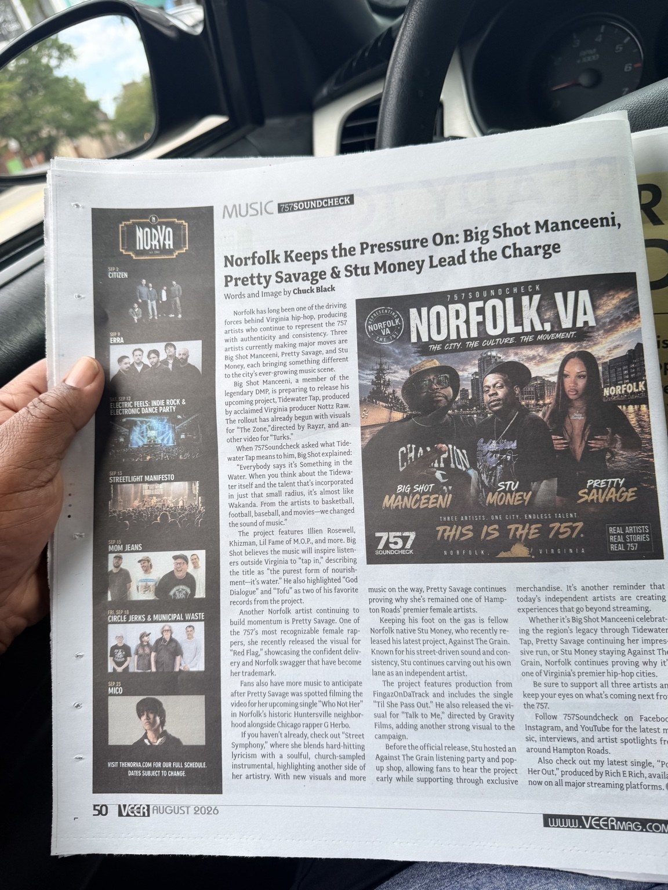

Norfolk Keeps the Pressure On: Big Shot Manceeni, Pretty Savage & Stu Money Lead the Charge
Norfolk artists push forward with new projects, visuals and independent release campaigns.

Read the Full Article
Norfolk has long been one of the driving forces behind Virginia hip-hop, producing artists who continue to represent the 757 with authenticity and consistency. Three artists currently making major moves are Big Shot Manceeni, Pretty Savage, and Stu Money, each bringing something different to the city's ever-growing music scene.
Big Shot Manceeni, a member of the legendary DMP, is preparing to release his upcoming project, Tidewater Tap, produced by acclaimed Virginia producer Nottz Raw. The rollout has already begun with visuals for "The Zone," directed by Rayzr, and another video for "Turks."
When 757Soundcheck asked what Tidewater Tap means to him, Big Shot explained:
"Everybody says it's Something in the Water. When you think about the Tidewater itself and the talent that's incorporated in just that small radius, it's almost like Wakanda. From the artists to basketball, football, baseball, and movies—we changed the sound of music."
The project features Illien Rosewell, Khizman, Lil Fame of M.O.P., and more. Big Shot believes the music will inspire listeners outside Virginia to "tap in," describing the title as "the purest form of nourishment—it's water." He also highlighted "God Dialogue" and "Tofu" as two of his favorite records from the project.
Another Norfolk artist continuing to build momentum is Pretty Savage. One of the 757's most recognizable female rappers, she recently released the visual for "Red Flag," showcasing the confident delivery and Norfolk swagger that have become her trademark.
Fans also have more music to anticipate after Pretty Savage was spotted filming the video for her upcoming single "Who Not Her" in Norfolk's historic Huntersville neighborhood alongside Chicago rapper G Herbo.
If you haven't already, check out "Street Symphony," where she blends hard-hitting lyricism with a soulful, church-sampled instrumental, highlighting another side of her artistry. With new visuals and more music on the way, Pretty Savage continues proving why she's remained one of Hampton Roads' premier female artists.
Keeping his foot on the gas is fellow Norfolk native Stu Money, who recently released his latest project, Against The Grain. Known for his street-driven sound and consistency, Stu continues carving out his own lane as an independent artist.
The project features production from FingazOnDaTrack and includes the single "Til She Pass Out." He also released the visual for "Talk to Me," directed by Gravity Films, adding another strong visual to the campaign.
Before the official release, Stu hosted an Against The Grain listening party and pop-up shop, allowing fans to hear the project early while supporting through exclusive merchandise. It's another reminder that today's independent artists are creating experiences that go beyond streaming.
Whether it's Big Shot Manceeni celebrating the region's legacy through Tidewater Tap, Pretty Savage continuing her impressive run, or Stu Money staying Against The Grain, Norfolk continues proving why it's one of Virginia's premier hip-hop cities.
Be sure to support all three artists and keep your eyes on what's coming next from the 757.
Follow 757Soundcheck on Facebook, Instagram, and YouTube for the latest music, interviews, and artist spotlights from around Hampton Roads.
Also check out my latest single, "Point Her Out," produced by Rich E Rich, available now on all major streaming platforms.
As Published in VEER Magazine
Photograph of the original printed article, including the byline and magazine layout.
